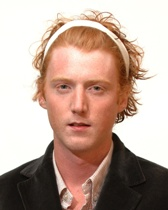
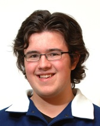
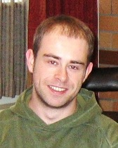
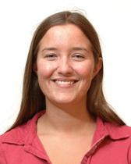
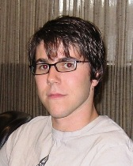

UBC Media Awards Contest 2006-2007
The latest annual election for University of British Columbia student (Alma Mater Society) council was in January 2007. To improve voter information for that election, AMS Council approved a voter-funded media (VFM) contest, sponsored by VoterMedia.org founder Mark Latham. Contest rules were:
Media Award Pool: $8,000 total
1st prize = $1500
2nd prize = $1400
3rd prize = $1200
4th prize = $1100
5th prize = $900
6th prize = $800
7th prize = $600
8th prize = $500
Media Contest Entry Fee: $100
Media Eligibility: Open to any person, group or organization, whether affiliated with UBC or not, except election candidates and members of the Elections Committee or Student Court.
Contest Judges: Winners determined by UBC students voting in the January 2007 AMS Council election.
Voting Format: There was a new, additional section on the election ballot, showing the media award contestants. Each student could vote for as many or as few media contestants as desired, by checking (or not checking) the box next to each contestant's name. The media contestant with the most votes got first prize, etc. This is a form of "approval voting".
Judging Criteria: The contest was intended to encourage election coverage helpful to voters, including analysis of AMS issues, interviews and assessments of electoral candidates, and reviews of the other media contestants. However, students were free to vote by any criteria they choose. Media contestants could communicate information to student voters via websites and/or any other means, in accordance with the Voter Funded Media Contest Rules established by the AMS Elections Committee.
Contestant Listing: Each media contestant's name and web link was displayed on the AMS Elections website Voter-Funded Media page promptly after entering the contest. Contestant names were listed on the January 2007 ballot.
Contest Entry Period: Entry deadline was January 19, 2007. Media contestants could begin their coverage of AMS issues as soon as they wished, but were encouraged to review the rules for electoral candidates, especially the restriction that active electoral campaigning was allowed only in the period from January 19-30. [See blog re late launch.]
How to Enter the Contest: Entry forms were available at the AMS Elections website Voter-Funded Media page until the entry deadline. Contact: Tiffany Glover (email: vfm[at]ams.ubc.ca), AMS Voter-Funded Media Administrator.
UBC AMS press release on the voter-funded media contest
Detailed email discussion leading to the above structure
Agreement between UBC Alma Mater Society and Mark Latham (2006-11-24)
See the articles "How UBC Can Change the World" and "Voter-Funded Media: Governance Reform for Democracies and Corporations" for explanations.
VoterMedia blog.
2006-2007 Media contestant list & links. |
Link to
2007-2008 Contest
The 2006-2007 contest rules were developed by Mark Latham and the UBC AMS Council's 2006 VFM Committee, whose members were:

Ian Pattillo (Chair)
AMS VP External Affairs

Matthew Naylor
AMS Science Rep

Mike Thicke
Member At Large

Stephanie Ryan
AMS Arts Rep

Steven Klein
Member At Large
|